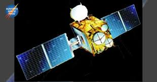

GSAT1
GSAT-8: A communication and navigation satellite inducted into the INSAT system in 2011
GSAT-10: A satellite for communication services like tele-education and telemedicine in 2011
GSAT-19: The first in the GSAT series to be launched by GSLV Mk-III in 2017
GSAT-11: India's heaviest satellite, launched in 2018, which provides high data rate connectivity to the Indian mainland and islands
NAVIC
The Indian Regional Navigation Satellite System provides positioning, navigation, and timing services for the country. NAVIC supports applications in transportation, location-based services, resource monitoring, and more.
India's space sector has also contributed to other areas, including:
Defense: India has launched defense-oriented satellites, such as GSAT-7, to strengthen its strategic surveillance and communication capabilities.
Disaster management: Remote sensing aids in disaster prediction, monitoring, and mitigation.
Agriculture: Space data supports precision farming and crop monitoring.
Climate studies: Satellites help monitor environmental changes and study climate patterns.